Sumac is found proliferating in many areas of Georgia, especially beside roads and in places with sufficient sun. It is harvested whenever the berries are red, which is late summer to early fall. It is best not to harvest after rain since the flavor is leached out. It is fantastic for foraging because you can make juice! Sofia witholds comment and makes faces like she is throwing up when she drinks it, while Anton says, "When you think of things that are really bad, this isn't one of them." It is very sour, but can be sweetened with sugar or honey to taste.
The following is a picture tutorial on how to process sumac in order to make delicious "sumac-ade"! First you need to gather your necessary tools: some sumac, a blender, a large container, a straining cloth, and a drinking glass. Then you seperate the stems of the drupe (cluster of berries) from the main stem. This is to prevent the blender from needing to chop up the main stem. Next, fill your berries into the blender. The main stem is pictured next to the blender. Turn on the blender very shortly! You do not want the seeds to be broken; however, they are very hard and will probably not break anyway. The blender will just seperate the berries from the stem for you and crush them a bit to make releasing the juice faster and easier.
Next, you can optionally pick out the stem pieces and put them in the Bunte Topf. Remember composting is the best thing ever! Well, giving it to the chickens is even better... Now, fill your blended berries into a large container: I used a large glass, but if you have more berries you could use a pitcher (not un cuadro). Then I took a really cool picture from the top of the glass. Finally, fill in some water!
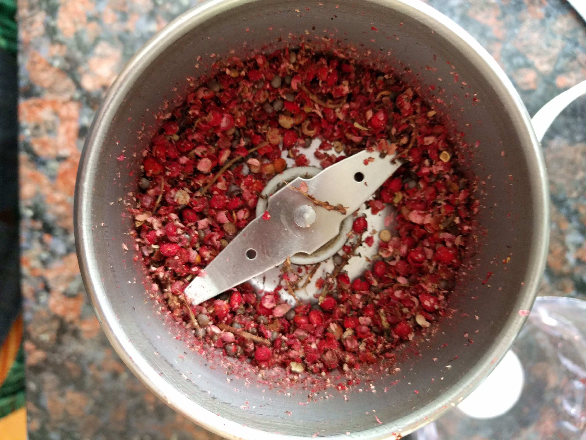 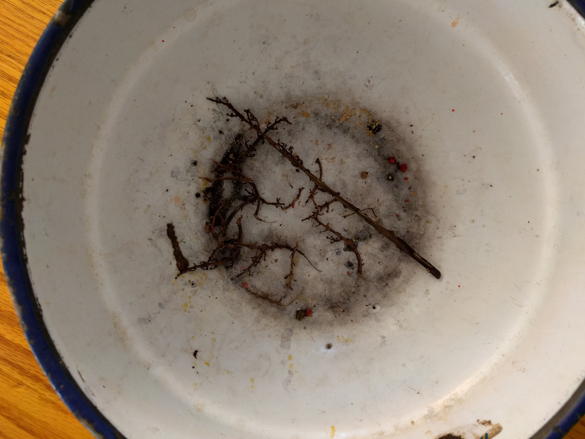 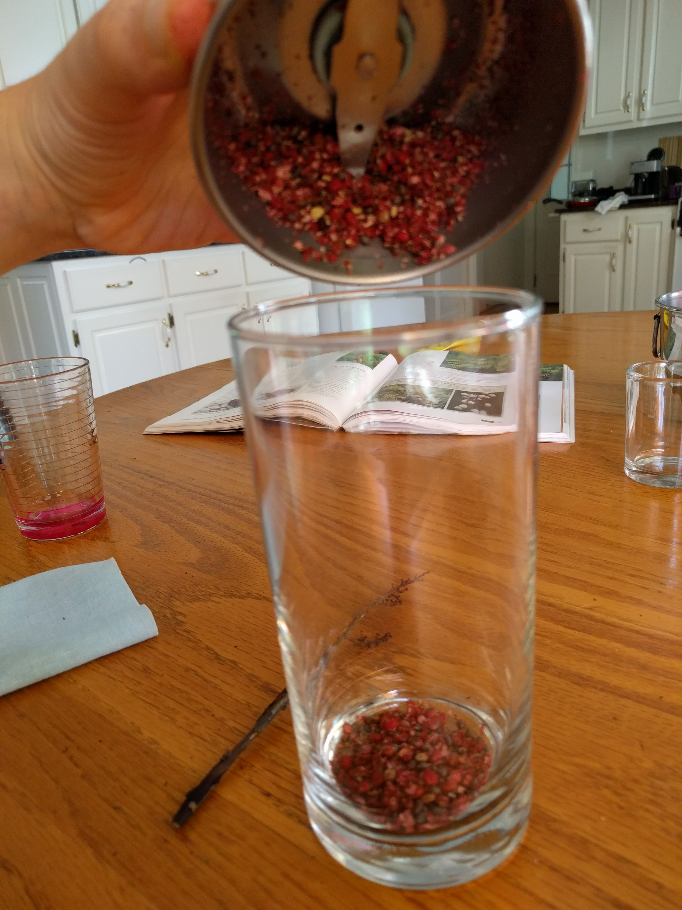 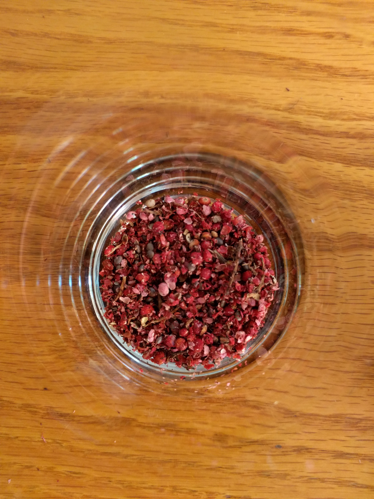 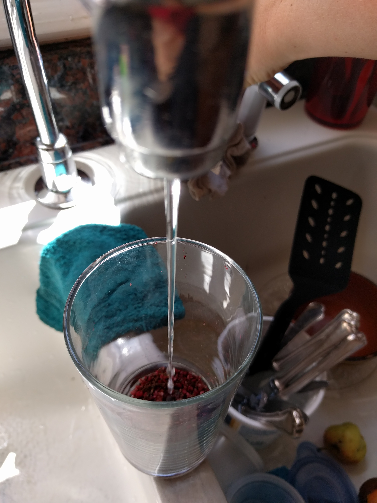Make sure to wash out the blender right away! Also, if pieces were sticking in it, add them to the glass. Now you will have to wait a while so that the water becomes flavored. Actually you might not have to wait so long, if you use a blender, since the juice comes out much faster than just putting the berries in water! When you think it is ready (you can just wait a while or taste it if you want), it is time to strain out the berries. Originally, I used a sieve, but the small hairs on the berries can still come through with a sieve. Now, I use a nice cloth and lay it on top of the drinking glass. Then, pour in from the large glass. When you are done, squeeze the cloth to get all the liquid out, and compost/throw outside the berries. However, I am collecting the seeds, and hopefully they will grow into a spiffin' sumac farm here at the K House!!! At the moment we must trek to Harris Shoals Park, pictured on the embedded map to obtain more. Sir Zooks approves of that though. There is also a known sumac location across from the pool, but it is unfortunately also known by the birds. There are also a lot on Epps Bridge Road.
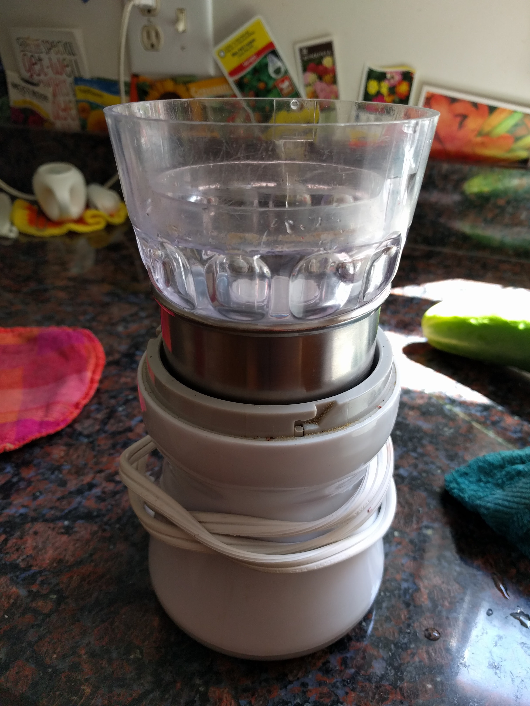 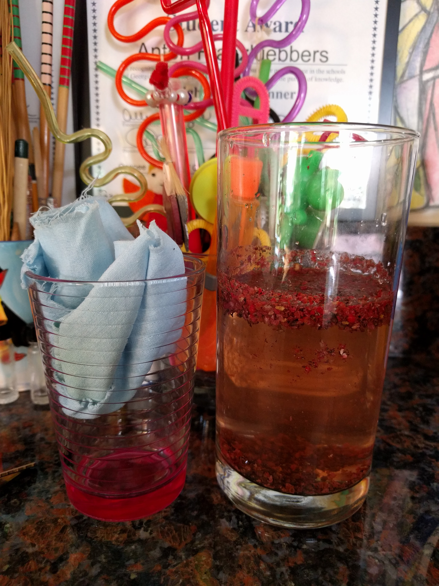 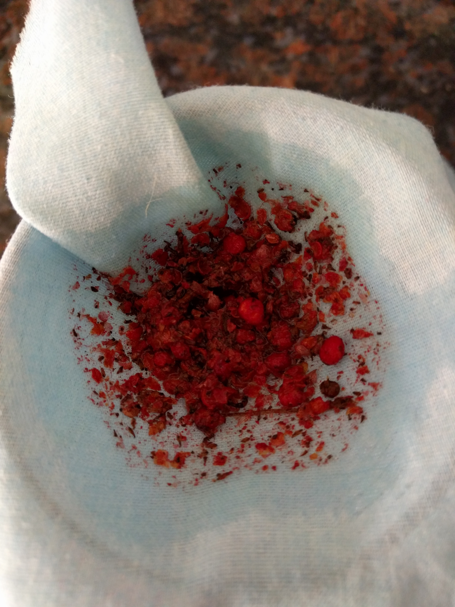 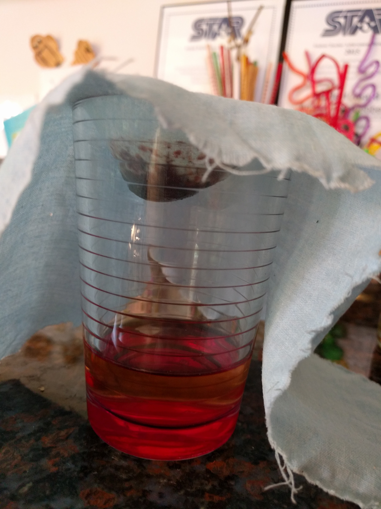 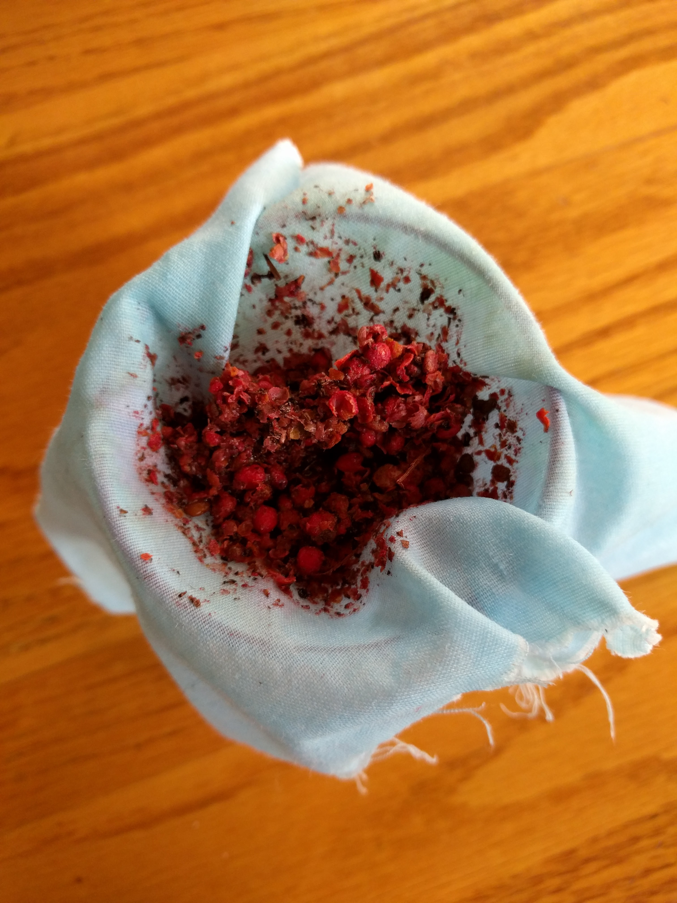 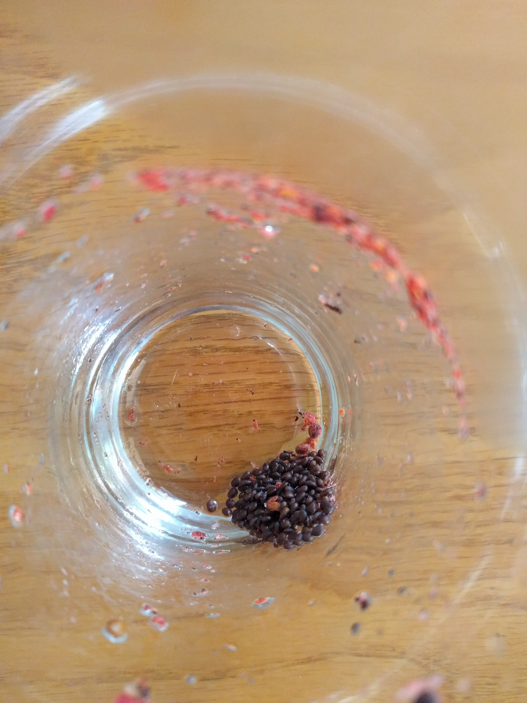